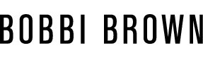
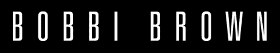

홈 > 브랜드 매거진 > 바비브라운
바비브라운
바비브라운(Bobbi Brown)은 자연스러운 아름다움을 강조하는 미국의 메이크업 브랜드이다.
산업 분야 뷰티·퍼스널케어 · 공개 등급 자료 기반 · 브랜드 평가 4.3 ★


한눈에 보는 브랜드
바비브라운(Bobbi Brown)은 메이크업 아티스트 바비 브라운이 1990년 화학자와 함께 개발한 10가지 자연색 립스틱을 1991년 뉴욕 버그도프굿맨 매장에 선보이며 출발한 미국 색조 브랜드다. 한 달에 100개를 예상했으나 하루 만에 물량이 동나는 반응을 얻었고, 1995년 에스티로더 컴퍼니가 약 7,450만 달러에 인수해 글로벌 색조 브랜드로 키웠다.
지금도 에스티로더 포트폴리오에 속해 있다.
브랜드 관점
가장 주목할 점은 맥(MAC)과 나스(NARS)가 강렬한 색과 아티스트리 표현을 앞세운 반면, 바비브라운은 피부를 자연스럽게 비추는 누드 메이크업과 '본래 모습을 더 좋게'라는 일상형 노선으로 자리를 갈랐다는 사실이다. 1991년 빨간 립스틱 전성기에 누드 색조를 던진 시도는 이른바 노메이크업 메이크업의 출발점으로 평가된다.
다만 창업자 바비 브라운은 30대 초에 서명한 25년 비경쟁 조항에 묶여 2016년 자기 이름의 브랜드를 떠났고, 조항이 풀린 2020년 존스로드(Jones Road)를 세워 본인 색깔을 다시 펼쳤다. 이는 브랜드명과 창업자의 손길이 분리됐음을 뜻한다.
시작과 성장
창업자 바비 브라운은 보스턴대를 거친 메이크업 아티스트로, 1990년 화학자와 협업해 입술 본래의 색을 그대로 살린 10가지 자연색 립스틱을 만들었다. 1991년 남편을 포함한 두 부부가 손잡고 버그도프굿맨에서 첫선을 보였는데, 한 달에 100개를 예상했으나 하루 만에 100개가 팔려나갔다.
화려한 색조가 지배하던 업계에 자연색 립스틱이 균열을 냈고 브랜드는 빠르게 성장했다. 1995년 에스티로더 컴퍼니가 약 7,450만 달러에 회사를 사들이면서, 창업자는 최고 크리에이티브 책임자로 남아 색조 라인의 방향을 계속 이끌었다.
이후 브랜드는 글로벌로 확장됐고, 창업자는 비경쟁 조항을 안은 채 2016년 회사를 떠났다.
브랜드 아이덴티티
정체성의 뿌리는 '있는 그대로를 더 좋게'라는 자연주의다. 결점과 주근깨, 주름까지 끌어안고 5분이면 끝나는 일상 메이크업을 지향한다.
로고는 군더더기 없는 검은색 워드마크로 절제된 톤을 드러내고, 목소리는 과장 없이 솔직하고 차분하다. 타깃은 진한 변신보다 자기다운 피부 표현을 원하는 폭넓은 연령대의 여성으로, 누드와 뉴트럴 톤, 피부에 좋은 성분을 담은 포뮬러를 핵심 약속으로 삼는다.
제품과 서비스
대표 라인은 다크서클을 가리는 스킨 코렉터 스틱(약 5만4천원), 세럼을 품은 쿠션·파운데이션, 그리고 출발점이 된 누드 립스틱이다. 한국 기준 웨이트리스 스킨 쿠션은 약 7만7천원, 인텐시브 세럼 쿠션은 약 9만2천~9만7천원 선이다.
채널은 신세계·현대 등 백화점 카운터와 공식 온라인몰, 멀티 뷰티 편집숍으로 나뉜다.
현재 상태
모회사는 1995년 인수 이후 에스티로더 컴퍼니이며, 본사 기능은 에스티로더의 뉴욕 거점을 따른다. 에스티로더는 브랜드별 매출을 따로 공개하지 않아 바비브라운 단독 연매출은 미공개다.
업계는 2012년 무렵 연 10억 달러 안팎으로 추정했으나 공식 수치는 아니다. 창업자 본인은 현재 지분이나 운영에 관여하지 않고 별도 브랜드 존스로드를 이끌고 있다.
타임라인
BI/CI 변천사
함께 읽을 브랜드
 뷰티·퍼스널케어 · 자료 기반헤라
뷰티·퍼스널케어 · 자료 기반헤라헤라(HERA)는 아모레퍼시픽의 프리미엄 화장품 브랜드로, 1995년 론칭했다.
 뷰티·퍼스널케어 · 자료 기반달바
뷰티·퍼스널케어 · 자료 기반달바달바(d'Alba)는 달바글로벌이 전개하는 대한민국의 프리미엄 비건 스킨케어 브랜드다. 2016년 론칭했으며 화이트 트러플 성분의 미스트 세럼으로 글로벌 베스트셀러를...
RN
롬앤
뷰티·퍼스널케어 · 자료 기반롬앤롬앤(rom&nd)은 아이패밀리에스씨가 2016년 론칭한 대한민국의 색조 화장품 브랜드다. 립틴트·아이섀도를 중심으로 10·20대에게 인기를 얻은 메이크업 브랜드다.
 뷰티·퍼스널케어 · 매거진 완성러쉬
뷰티·퍼스널케어 · 매거진 완성러쉬러쉬는 영국의 뷰티·퍼스널케어 브랜드로, 성분, 사용감, 패키지, 이미지 언어가 구매 판단에 직접 연결되는 영역입니다.
 뷰티·퍼스널케어 · 편집 검수니베아
뷰티·퍼스널케어 · 편집 검수니베아니베아(NIVEA)는 1911년 독일 바이어스도르프(Beiersdorf)가 출시한 글로벌 스킨케어 브랜드다. 세계 최초의 안정적인 유중수(油中水) 유화 크림을 선보이...
 뷰티·퍼스널케어 · 자료 기반오리진스
뷰티·퍼스널케어 · 자료 기반오리진스오리진스(Origins)는 에스티로더가 1990년 출범시킨 미국의 자연주의 스킨케어 브랜드이다.
 뷰티·퍼스널케어 · 자료 기반설화수
뷰티·퍼스널케어 · 자료 기반설화수설화수(Sulwhasoo)는 아모레퍼시픽이 1997년 론칭한 대한민국의 한방 럭셔리 스킨케어 브랜드다. 한방 원료와 프리미엄 포지셔닝으로 아모레퍼시픽을 대표하는 럭셔...
 뷰티·퍼스널케어 · 자료 기반이니스프리
뷰티·퍼스널케어 · 자료 기반이니스프리이니스프리(Innisfree)는 아모레퍼시픽이 2000년 론칭한 대한민국의 자연주의 뷰티 브랜드다. 제주 원료를 내세운 스킨케어·색조로 아모레퍼시픽 자연주의 1호 브...